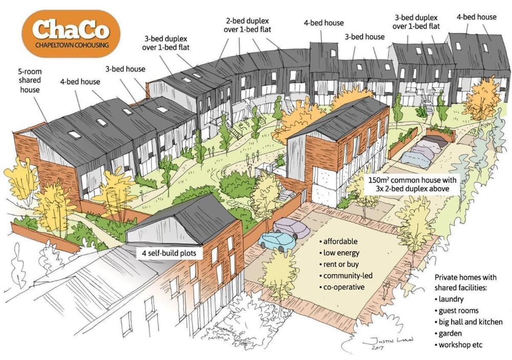
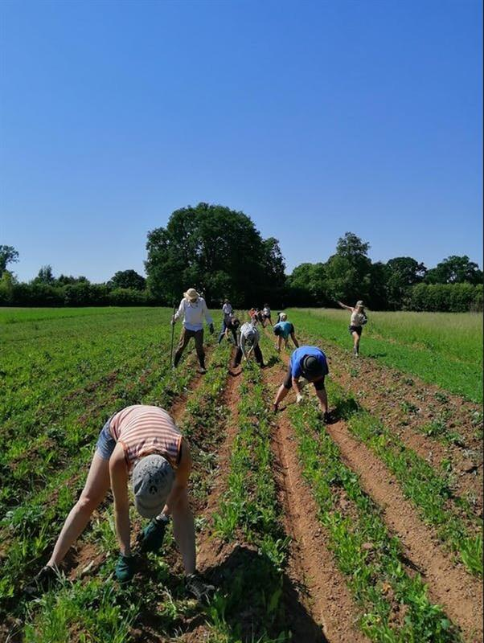

These communities are experimenting with greener and fairer ways of living
Lecturer, Cardiff Metropolitan University
July 10, 2020 12.14pm BST
Frankie lives in a six-bedroom house on the outskirts of Leeds. She is her own landlord, but doesn’t own the house. Instead she is part of a co-operative housing group: together, they have been able to buy the house and then rent it at an affordable price back to themselves as tenants.
Just a few miles away, another group has secured funding to design and build an eco-community of up to 30 households, including what is known as a common house: a shared house with a kitchen, laundry, workshops, a meeting space, guest rooms and gardens.

The plans. © Chapeltown Cohousing, Author provided
Much further away in north-east Germany is a 37-acre site where a group of people live and work together sharing food, childcare and resources. They have created a community where relationships and the environment are given primacy.
All three of these are examples of intentional communities: groups of people who have chosen to live together in a way that reflects their shared values. These communities come in a variety of shapes and forms, from squats and housing co-operatives to communes and co-housing communities.
Intentional communities are by no means a new idea, but they have often been cited as the experimental spaces or test beds for the future. They are sometimes considered as utopian experiments where groups and people strive to create a better life.
Open on original site ↗Many people are looking for antidotes to ever-increasing consumption and feelings of social isolation. There is no single solution, and we will need to look at all aspects of our lives, from the way we consume to day-to-day practices. But for some, the solution is to be found in communal living and intentional communities. It may be that some of the ideas being tested in these communities can create the blueprints for the towns and cities of tomorrow.
Alternative lifestyles
There is some evidence that intentional communities are formed as responses to the concerns of society at any given time.
Back in the 1970s, many new communities were formed as a backlash to mass urbanisation and industrialisation. Such groups bought up rural property, often with land, and attempted a “back to the land” lifestyle informed by ideas of self-sufficiency.
Many of these communities failed, but some still function successfully today, often in their original form. For example, Canon Frome Court collectively manages a 40-acre organic farm in Herefordshire. Together, the community grows much of its own food and keeps cows, sheep and chickens.

On the farm at Canon Frome Court, May 2020. © Canon Frome Court, Author provided
It is difficult to estimate the number of intentional communities worldwide, but they are certainly in the thousands. In the UK alone there are around 300 listed (and many more that are not), with new communities springing up every year.
If we were to use intentional communities as a gauge of social discontent, then the multiple pressures of housing, lack of community, an ageing society and, of course, climate change would be central to this feeling. Look a little deeper, and these problems are actually part a much wider group of social concerns around consumption, global inequality and planetary limits.
In mainstream society, the solutions to these interlocking ideas are presented as top-down measures made via policy, legislation and global agreements, but also as personal choices made by individuals and groups: driving and flying less, consuming more ethically, eating a more plant-based diet, changing the way we work and live.
Those within intentional communities would say that they have been ahead of the curve on this for many years, with ideas such as vegetarianism and self-sufficiency often central to their way of life. They often occupy the necessary middle ground between government policy and individual action. The documentary maker Helen Iles named her series of films on intentional communities “Living in the future”.
Open on original site ↗Living in the future
So what can we tell about possible directions of wider society from the intentional communities of today?
Some rural communities have embraced low-impact development. For example, Rhiw Las, a rural eco-community in west Wales, has created a sustainable settlement based on strict ecological guidelines.
Meanwhile, urban-based communities, such as Bunker Housing Co-operative in Brighton, look to create high-quality affordable housing for local people. Such co-operatives are based on the principle of collective control and management of property.
They enable groups of people who might not have access to secure housing to form a legal entity, which enables them to collectively buy and own property. They also have the capacity to incorporate or support co-operative businesses, such as food or printing co-ops.
Open on original site ↗Urban housing co-ops are particularly relevant in areas where house prices and rents can be prohibitively high and exclude certain groups, such as precarious workers or younger people. Housing co-ops can offer secure housing options that also empower people and enable them to live within their means.
The group Radical Routes (a network of radical co-ops) also suggests that when people are freed from excessive rent payments, they are then freer to engage with their communities and participate in social change.
Today’s urban communities capitalise on urban cycle networks and public transport. They are also more likely to engage with green transport options such as electric car pooling and on-site work spaces to reduce travel entirely.
Fishponds Co-Build, a prospective community on the edge of Bristol, has created its own sustainability action plan. Together, they have outlined ways they intend to reduce their carbon footprint through communal living.
The ideas fermented in past communities, such as straw-bale building and shared ownership, are being developed in exciting and creative ways to transform rural and urban living. This can incorporate new building techniques, such as PassiveHaus design in Lancaster Co-Housing, and the development of alternative spaces, such as car-free neighbourhoods.
Intentional communities may not be the solution to all our problems, but they certainly represent an area of experimentation in the ways we share space, shape community and provide a peek at potential ways forward in uncertain times.
SOURCE: THE CONVERSATION